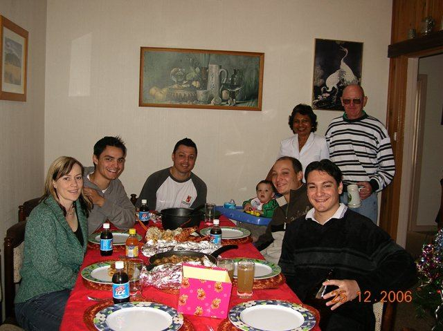

Tarpeena Tales 21
I was going to write a Tarpeena Tales to tell you all what our Christmas was like. But I just didn't have time.
I was going to tell you all how nice it was for our four boys, well men they are now, to make the trip home to see Mum and bring a smile of delight to her face, knowing that her sons have grown up so well. And I was going to tell you in great detail how proud we were to see our grandson crawling all over the house in search of trouble.
Which he managed to find a couple of times.
I was going to tell you all how thrilling it was to see Olivia being a proud Mum herself coping with her own son with aplomb.
I was going to wax lyrical about Christmas, musing that when you take all the commerciality out of it and the religious hyperbole that surrounds it ,Christmas is still a time for family togetherness and bonding as it has been for centuries of human socializing. We need a festival to inspire us to get together, either that or a funeral but better a festival.
I was going to tell you that Jim's kegged homebrew was very handy and saved heaps of bottles being emptied, that I am the master at darts but the pupil at scrabble. Jim showed latent talent at scrabble ,rivaling only Olivia, just how she gets an X or a Q on a triple letter every time astounds me. And when I played Jim he did the same. Tony and Jo combined forces at scrabble and although their combined talents weren't enough to win it was enough to beat me.
John and Jim played darts together and didn't argue once, Christmas is a good time. 

But Christmas has come and gone as have the boys. They all went away and we spent New Years Eve by ourselves on the back veranda until the Sydney fireworks started on TV.
I never had time to write a tales as the ensuite had to be finished. This ensuite has been a hiccup in my retirement plans but is appreciated by John and Roxanne and whilst they were away for the New Year I managed to finished the painting. So now I can relax again and let only the dogs and the weeds distract me from my daily routine.
There was a good line there about the dogs need spaying and the weeds need spraying but I cant use it as the dogs are male but they do need neutering.
 Still the dogs are having the desired effect of taking me for longer and more interesting walks in the Pines. especially long today when Buddha decided to go walkabout. Banjo dutifully came back but Buddha got distracted and disappeared. he found himself the other side of the Mills log yard fence and proceeded to run back and forth along the fence , not using his brains and getting the other side the same way as he got in. So he got lost and I spent half an hour walking the pines looking for him. It was stinking hot today and I think he actually got more exercise than me. I thought at the time a dog in the hand ( Banjo) is better than two in the bush so took Banjo home, got the car and went back to the Mill to see if they had seen a black dog. They had . And Buddha was eventually rounded up and re united with Banjo. A very tired Buddha but he is the lazier of the two so needed the extra run!
Still the dogs are having the desired effect of taking me for longer and more interesting walks in the Pines. especially long today when Buddha decided to go walkabout. Banjo dutifully came back but Buddha got distracted and disappeared. he found himself the other side of the Mills log yard fence and proceeded to run back and forth along the fence , not using his brains and getting the other side the same way as he got in. So he got lost and I spent half an hour walking the pines looking for him. It was stinking hot today and I think he actually got more exercise than me. I thought at the time a dog in the hand ( Banjo) is better than two in the bush so took Banjo home, got the car and went back to the Mill to see if they had seen a black dog. They had . And Buddha was eventually rounded up and re united with Banjo. A very tired Buddha but he is the lazier of the two so needed the extra run!
They are a pair of devils together these dogs but are learning to obey a bit better than most dogs their age and now John is back the extra walking will do them good. I can see a direct correlation between their hole digging exploits and exercise levels, the more buggered they are the the shallower the hole I have to fill in.
Well at last I have time to write a Tarpeena Tales..... don't know how to start though.
05.01.07